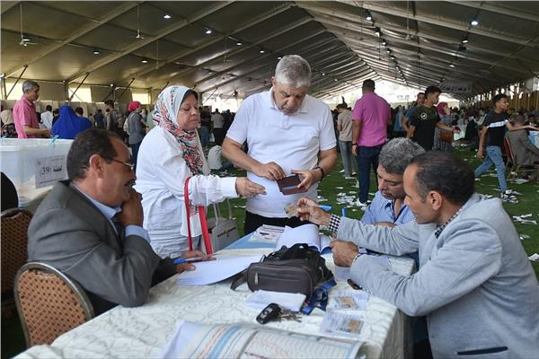
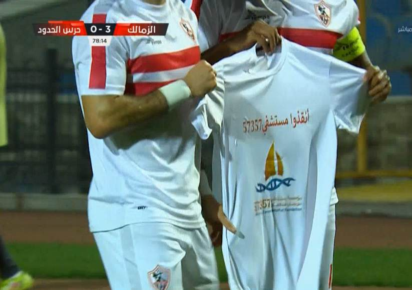

Important news

انتخابات نادي الزمالك
أسفرت انتخابات مجلس إدارة نادي الزمالك عن فوز أفراد القائمة الموحدة برئاسة حسين لبيب بجميع المناصب. وفاز حسين لبيب بمنصب رئيس الزمالك على حساب فاروق جعفر وعمر هريدي وميرفت السيد أحمد وماجد فاروق الحنبلي وتفوق هشام نصر على هاني العتال في منصب نائب الرئيس الذي شهد المنافسة الأقوى والأصعب في الانتخابات. وحصد هشام نصر 9480 صوتا، بفارق 440 صوتا فقط عن هاني العتال الذي حصد 9040 وفاز حسام المندوه الحسيني بمنصب أمين الصندوق، بعد الجدل الذي أثير حول شرعية وجوده في الانتخابات. وقضت محكمة القضاء الإداري باستبعاد حسام المندوه بسبب عضويته في مجلس النواب، قبل أن تعلن اللجنة الأولمبية اعتماد اسمه في قوائم المرشحين بناء على حصوله على إذن من مجلس النواب بالترشح. أما في مناصب الأعضاء فوق السن، ففاز أحمد سليمان وهاني شكري وهاني برزي وحسين السيد وعمرو أدهم ومحمد طارق.وفي الأعضاء تحت السن، فاز ثلاثي القائمة الموحدة أحمد خالد حسانين ورامي نصوحي ونيرة الأحمر وأقيمت الانتخابات في 20 أكتوبر بعد سلسلة من التطورات بدأت بحكم عزل مرتضى منصور رئيس النادي السابق من منصبه، وانتهت باستقالة مجلس الإدارة السابق بكامل أفراده.
مبادره لا للتعصب"الكره للجميع"
أعلنت وزارة الشباب والرياضة، بالتعاون مع المجلس الأعلى للإعلام، عن الشعار الخاص بمبادرة "لا للتعصب"، التى تطلقها الوزارة بالتعاون مع المجلس لنبذ التعصب فى المجتمع، بالتزامن مع مباراة نهائى أفريقيا، التى تجمع الأهلى والزمالك يوم 27 نوفمبر الجارى. ويظهر على الشعار مصر أولا لا للتعصب، مع صورة للكرة وكأس دورى الأبطال، وبجانبه شعارى ناديى الأهلى والزمالك يتصافحان، في إشارة للحب والود بين الفريقين، وأن اللقاء مجرد مباراة كرة قدم بمجرد انتهاؤها تنتهى المنافسة فى الملعب. وشدد أشرف صبحى على أن مبادرة لا للتعصب برنامج طويل الأجل، ولا تقف عند نهائى دورى أبطال أفريقيا فقط، وفى وزارة الرياضة نأخذ القرارات ولا ننحاز لأحد على حساب الآخر، بل نتبع الحزم الهادئ، مشيرا إلى أن مبادرة نبذ التعصب تطبق نظام التكامل الذى تدعو له القيادة السياسية بدمج كل المؤسسات المرتبطة بالأمر، وهو ما يسمى التحرك الذكى لنشر المبادرة. وأكد أشرف صبحى أن حملة لا للتعصب مستمرة على المستوى الشبابى، وأهم مقومات النجاح هو الجانب الإعلامى، ومن هنا نمد أيدينا لليوم السابع، ونحتاج المساندة فى دعم المبادرة قائلا، إنه سيتم مخاطبة الجماهير والإدارات من خلال مدربين فى التعصب، وهى فكرة كرم جبر بأن يتم تدريبهم وتعليمهم الأمن القومى والقانون والاستراتيجيات، وأهم شيء هو الإعلام، لأن المبادرة ممتدة ولا تتوقف ولها نظام تسير عليه .
